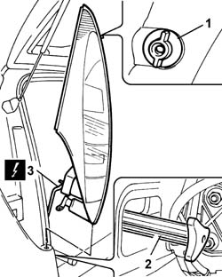

5540A44 L/H OR R/H TAIL LIGHT (ONE) - R+R
- Path
- Procedures > 55 ELECTRICAL EQUIPMENT > 5540 EXTERIOR LIGHTING > 5540A LIGHTING > 5540A44 L/H OR R/H TAIL LIGHT (ONE) - R+R
- Kind
- repair procedure (removal / refitting; the operation number is the code)
- Applies to
- all engines; all production periods
- Interactive page
- https://sloeber94.github.io/elrnDB-fUlss/en/#/179007570
Applies to: all engines; all production periods
 Removing
Removing
 Refitting
RefittingOp. 5530B56 BATTERY DRIP TRAY COVER - R.R.
- Disconnect the negative battery terminal.
Op. 7040H56 REAR SIDE PANEL FLAP (ONE) - R.R.
1. Undo the front fastening.
2. Work on the inside of the side trim and undo the rear fastenings.
- Partly extract the rear light cluster.
3. Disconnect the electrical connection.
4. Release the rear light cluster and remove it.

Applies to: all engines; all production periods
Refitting
Removing- Connect the electrical connection.
- Place the rear light cluster in position.
- Tighten the front fastening.
- Work on the inside of the side trim and tighten the rear fastenings.
Op. 7040H56 REAR SIDE PANEL FLAP (ONE) - R.R.
- Connect the negative battery terminal.